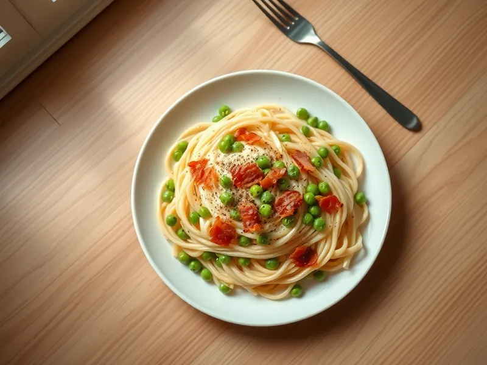

Паста с беконом и горошком в сливках
Макароны с хрустящим беконом и зелёным горошком в сливочном соусе
20 мин2 порц.765 ккал на порциюБ 30 · Ж 35 · У 80Итальянская кухня
Открыть в приложении: порции, таймеры, список покупок
Продукты на 2 порц.
- Макароны200 г
- Бекон80 г
- Зелёный горошек150 г
- Сливки 20%120 мл
- Пармезан30 г
- Соль2 ч. л.
- Перец чёрный молотый2 щеп.
- Вода2000 мл
Как готовить
- Вскипятите воду на сильном огне, посолите и сварите пасту по инструкции на упаковке, обычно 8-10 минут.
- Бекон нарежьте полосками и обжарьте на сухой сковороде на среднем огне 5 минут до хрустящих краёв.
- Добавьте замороженный горошек и жарьте 2-3 минуты, пока он не оттает и не станет ярко-зелёным.
- Влейте сливки и томите 2 минуты, вмешайте тёртый пармезан и перец.
- Откиньте пасту, переложите в соус и перемешайте 1 минуту, подлив немного воды от пасты, если соус густой.
Совет. Лучше всего подходят короткие макароны, ракушки или перья: горошек прячется внутри и не скатывается с вилки.